Yenlik Abdissattar, designer working across editorial, interface, motion and AI. Looking for internships and junior roles in Seoul, remote and freelance.
Under three minutes blind contours
Index
12 projects
01
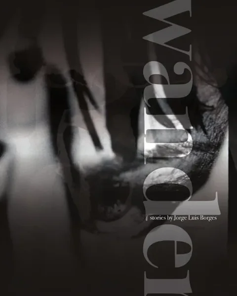
WanderStories by Jorge Luis BorgesBook designEditorial Design202602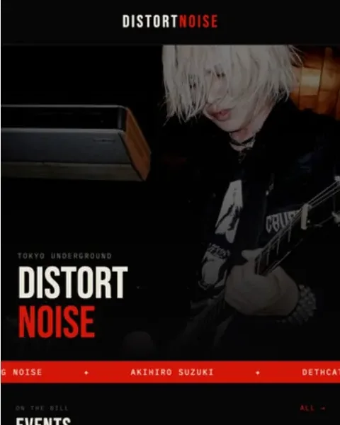
Distort NoiseBands, events, merch and artists in one appApp design, UX/UIInterface202603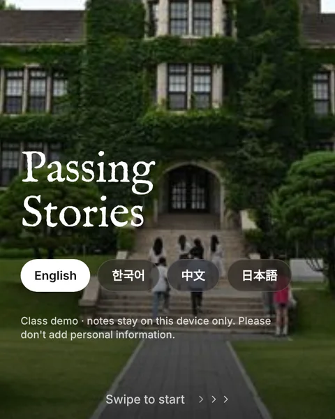
Passing StoriesA history map of SinchonInteraction design, UX/UIInterface202604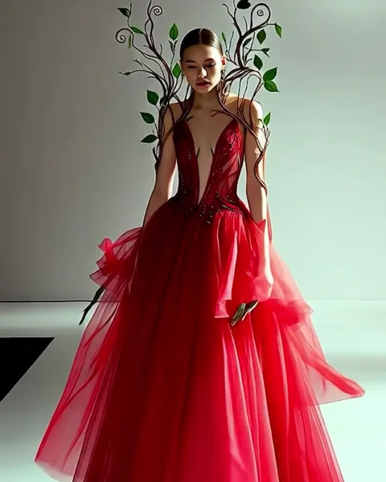
RunwAIAI fashion film and magazineAI, film, editorialAI202505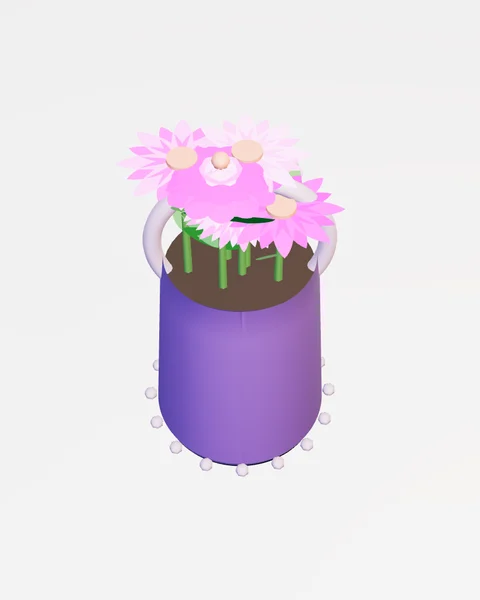
VESSELA flower pot for every visitorInteractive AI installationAI202606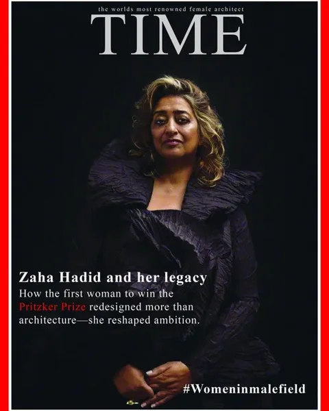
TIMEMagazine redesign, print to appEditorial, UX/UIEditorial Design202507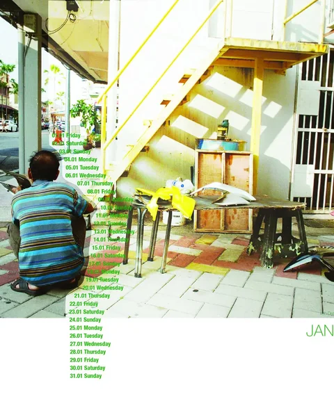
SnippetsA year in street photographsVisual systemsEditorial Design202608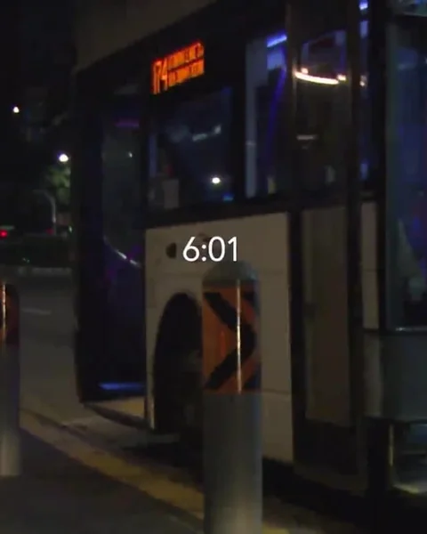
Silence of the DawnSingapore, early morningDocumentary filmFilm and Motion202509Fly Me to the MoonSix panels, then motionExpressive typography, motionFilm and Motion202510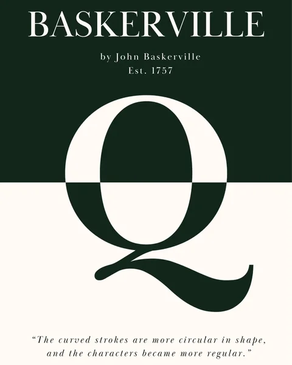
BaskervilleTypography studyTypography, poster, book coverEditorial Design202511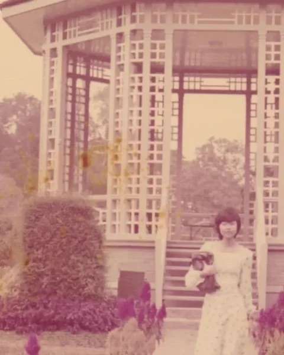
GazeboThrifted photographs, SingaporeImage-making, motionFilm and Motion202512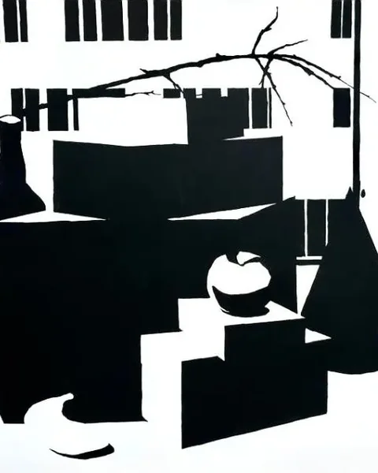
FoundationsDrawing, colour and illustrationCourseworkFoundations2025
AboutI study Information & Interaction Design at Yonsei University and spent an exchange semester at NTU's School of Art, Design and Media in Singapore. I work across editorial, interface, motion and AI, and before design I managed large events, including the World Schools Chess Teams Championship in Aktau.
Read the CVDownload the CV as PDFLinkedIn ↗
Contact
Open to internships and full-time roles in Seoul, remote work and freelance projects.